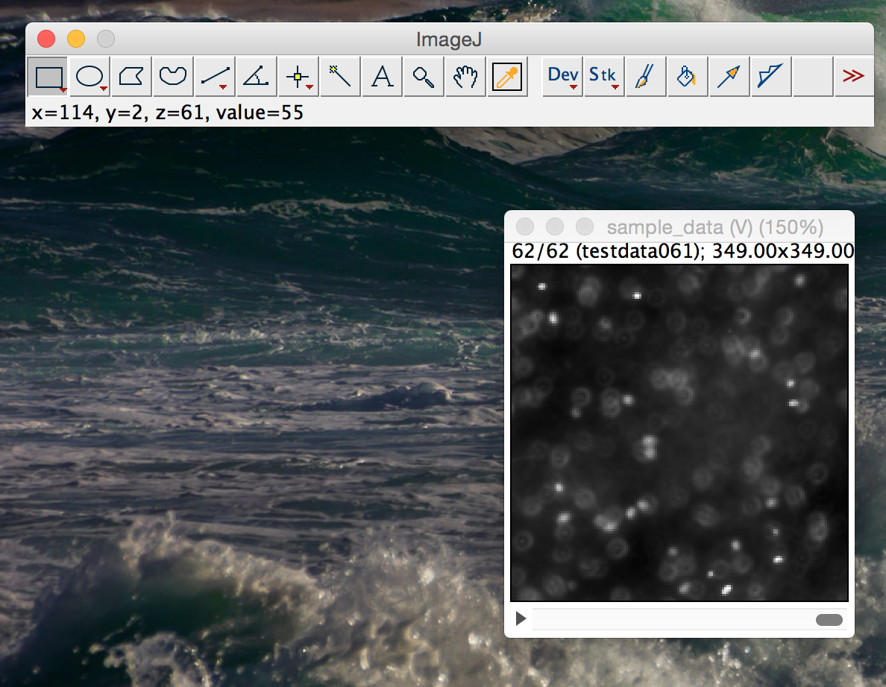
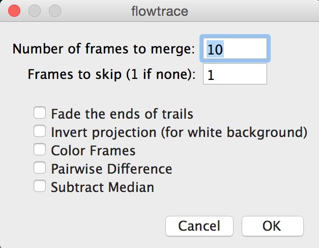

flowtrace for Fiji and ImageJ
Implementation of the flowtrace tool as a macro for Fiji / ImageJ. Please make sure that you are running the latest version of Fiji or ImageJ.
This has been tested in ImageJ32, ImageJ64, and Fiji.
William Gilpin, Vivek N. Prakash, and Manu Prakash, 2015
Installation
Download the code and sample images from the GitHub repository
Alternatively, on OSX/Linux you can initiate the download from the terminal using
curl -OS https://github.com/williamgilpin/flowtrace_imagej/archive/master.zipOr, using git
git clone https://github.com/williamgilpin/flowtrace_imagej.gitRunning flowtrace
Open a folder containing an image time series as a stack or virtual stack
In order to run the tool without installing, go to Plugins > Macros > Run
Navigate to the folder into which you downloaded the tool and double click on it. You will be presented with a list of options for running the tool
For "Number of frames to merge," select the number of frames that should be used to make each pathline. The larger this number, the longer the resulting pathlines (for best performance, this should be as large as possible while still smaller than the number of frames over which the unsteady flow noticeably changes).
The remaining options are described in greater detail below. Click OK to continue.
Now follow the prompt to choose a directory into which to save the output images. Click OK to run the tool.
Permanent Installation
If you find yourself using flowtrace on a regular basis, you may want to install it as a permanent macro in Fiji or ImageJ's plugins menu.
In ImageJ:
- Manually drag
flowtrace.ijminto the folderImageJ/macros(located in the installation directory of ImageJ), - Restart ImageJ.
In Fiji on OSX:
- Go to
Applications/Fiji, right-click the icon, and select "Show package contents"). - Rename the file
flowtrace.ijmtoflowtrace_.ijm(it needs to have a name containing an underscore because of the way that Fiji checks for packages). - Place
flowtrace_.ijmintoApplications/Fiji - Open Fiji and go to Plugins > Install Plugin, and then select
flowtrace_.ijmfrom the file list when prompted. - Restart Fiji.
In Fiji on Windows:
- Find your installation directory, it is likely somewhere like
Program Files (x86)/Fiji.app - Rename the file
flowtrace.ijmtoflowtrace_.ijm(it needs to have a name containing an underscore because of the way that Fiji checks for packages). - Place
flowtrace_.ijminto the installation directory. - Open Fiji and go to Plugins > Install Plugin, and then select
flowtrace_.ijmfrom the file list when prompted. - Restart Fiji.
Options
When flowtrace is run, you are presented with the following options:
-
Fade the ends of trails
- Linearly dim the pathlines in each image, such that the portion of the pathline that comes from frames further in the past appears dimmer.
-
Invert projections
- If you are using movies of dark objects against a light background (such as bright field microscope images, or a video of an insect flock or swarm), then invert the projection process in order to generate the appropriate pathlines
-
Color Frames
- In each frame of the resulting time series, color-code the pathlines by time. The portion of the streamline that is further in the past will appear more blue, while the more recent frames will be colored redder. The most recent frame is left untinted
-
Frames to skip
- If you don't want to project from every frame in the range of the time series (for example, if you want dotted lines, or if you think your data oversamples in time), then set "Frames to skip" to a number larger than 1. If you are not certain, leave this as 1.
-
Pairwise Difference
- Take the pairwise difference between all of the images in the time series.
- This is useful for removing very slow-moving particles from the field of view. Use this when "Subtract Median" does not remove artifacts aggressively enough.
- This works by default in Fiji. In order to make this work in other versions of ImageJ, please install the "Kymograph" plugin from EMBL. That plugin should be attributed to J. Rietdorf, FMI Basel and A. Seitz, EMBL Heidelberg.
-
Subtract Median
- For each substack for which a pathline will be generated, subtract out the median of each pixel value. This option is good for eliminating backgound objects (or any objects that move slower than the tracer particles or moving organisms)
Debugging
"Color Frames" option fails
- If the output log says
Unrecognized Array functionandrvals = Array.<getSequence>(nmerge);then you need to update to the latest version of Fiji or ImageJ
Future
Bug reports and pull requests are encouraged through GitHub